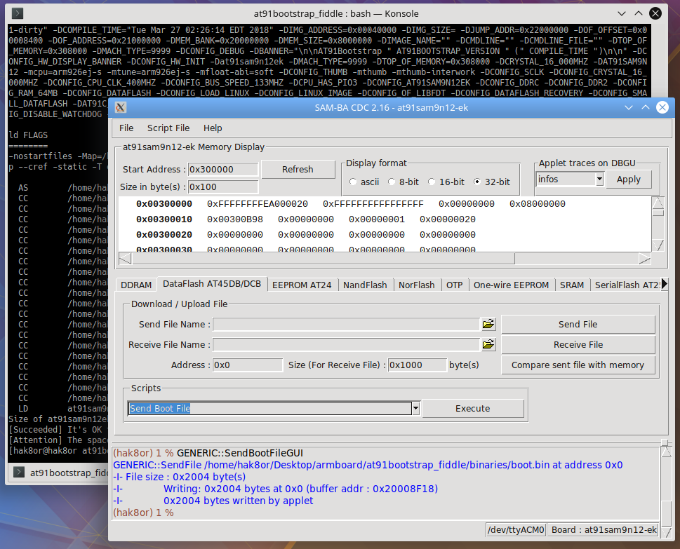

AT91 Bootstrap
In addition to SAM-BA, Atmel released AT91 Bootstrap, a secondary bootloader which handles clocking, DRAM initialization, and can even boot the Linux kernel directly without the need for U-Boot. They also made some good documentation on it, though I found the code itself to be fairly messy and poorly documented. Heck, it's even written in C89 style where all the variables are at the top of functions and using for(i = 0; i < 100; i++) instead of style for(int i = 0; i < 100; i++) for loops.
Our first goal is to just get bootstrap both compiling and running on the board, after which comes the Linux kernel and busybox.
Configuring
To download the source code of AT91 Bootstrap and configure it, just do a git clone;
# Clone the git repo of AT91 Bootstrap
git clone https://github.com/linux4sam/at91bootstrap.git
# Enter the directory of the git repo
cd at91bootstrap
This software by Atmel, and almost all other larger codebases that run on bare metal, use kconfig to configure itself (works with define's in C/C++ code and other various configuration). In here you can configure things like enabling the ability to direct boot the Linux kernel, where in dataflash the kernel and device tree is stored, where to copy them to in DRAM, and more.
To start off, we need to get the default configuration (defconfig) that represents our board. Since our board is based on the SAM9N12EK board from Atmel, we have to find the name of that defconfig. In the root of the repository we can do the following:
[hak8or@hak8or at91bootstrap_fiddle]$ find . -name "*sam9n12*defconfig"
./board/at91sam9n12ek/at91sam9n12eksd_linux_image_dt_defconfig
./board/at91sam9n12ek/at91sam9n12eksd_linux_image_defconfig
./board/at91sam9n12ek/at91sam9n12eknf_uboot_defconfig
./board/at91sam9n12ek/at91sam9n12eksd_uboot_defconfig
./board/at91sam9n12ek/at91sam9n12ekdf_linux_image_dt_defconfig
./board/at91sam9n12ek/at91sam9n12eknf_linux_image_defconfig
./board/at91sam9n12ek/at91sam9n12ekdf_linux_image_defconfig
./board/at91sam9n12ek/at91sam9n12eknf_linux_image_dt_defconfig
./board/at91sam9n12ek/at91sam9n12ekdf_uboot_defconfig
The plan is to boot linux directly (so no uboot) and from dataflash instead of nandflash (so df instead of nf). We will also be using a device tree (more on that later), in which case we also want the dt acronym. What's left is at91sam9n12ekdf_linux_image_dt_defconfig so running make at91sam9n12ekdf_linux_image_dt_defconfig will create a config file in the root of the git repo that is just a copy of that defconfig file which make menuconfig will modify. Since we just want the bootstrap to compile and run for now, we only need to make two changes via menuconfig. First is in slow clock configuration options where you should uncheck Use External 32KHZ oscillator because this board does not have that component populated.
Secondly is the DRAM configuration. The DRAM used in the evaluation kit is the MT47H64M16HR-3 while we use the W9751G6KB-25. Their IC has eight banks while ours has only 4, with the remaining timing paremeters being usable, so all we need to change is the following;
[hak8or@hak8or at91bootstrap]$ git diff board/at91sam9n12ek/at91sam9n12ek.c
diff --git a/board/at91sam9n12ek/at91sam9n12ek.c b/board/at91sam9n12ek/at91sam9n12ek.c
index fee32d5..369dab8 100644
--- a/board/at91sam9n12ek/at91sam9n12ek.c
+++ b/board/at91sam9n12ek/at91sam9n12ek.c
@@ -74,7 +74,7 @@ static void ddramc_reg_config(struct ddramc_register *ddramc_config)
ddramc_config->cr = (AT91C_DDRC2_NC_DDR10_SDR9 // 10 column bits (1K)
| AT91C_DDRC2_NR_13 // 13 row bits (8K)
| AT91C_DDRC2_CAS_3 // CAS Latency 3
- | AT91C_DDRC2_NB_BANKS_8 // 8 banks
+ | AT91C_DDRC2_NB_BANKS_4 // 4 banks
| AT91C_DDRC2_DISABLE_RESET_DLL
| AT91C_DDRC2_DECOD_INTERLEAVED);
Toolchain
This is where many run into issues, how to handle the toolchain. The way this guide is set up uses a fairly painless process on how to handle the toolchains for this project. This is also all done in an Arch Linux based distro for simplicities sake (Ubuntu PPA's tend to be so old that you have to manually add a PPA, Arch uses AUR which has a huge amount of packages which are actually up to date since it's a rolling release). There are two types of compilers we will use, arm-none-***
and arm-linux-***, the first of which being used for AT91 Bootstrap and SAM-BA applets while the second is for the Linux Kernel and cross compiling binaries running on the board under linux.
In Arch, simply doing pacman -S arm-none-eabi-gcc will get you the newest (7.3.0 as of writing) toolchain, but under Ubuntu it seems doing apt get install arm-none-eabi-gcc should also suffice. For arm-linux*** buildroot will be used (it fetches the toolchain and compiles everything for you, crazy stuff).
Compiling
Now that we have a compiler, we should be able to just run make CROSS_COMPILE=arm-none-eabi- successfully.
[hak8or@hak8or at91bootstrap_fiddle]$ make CROSS_COMPILE=arm-none-eabi-
CC
========
arm-none-eabi-gcc 7.3.0
as FLAGS
========
-g -Os -Wall -I/home/hak8or/Desktop/armboard/at91bootstrap_fiddle/board/at91sam9n12ek -Iinclude -Icontrib/include -DJUMP_ADDR=0x22000000 -DTOP_OF_MEMORY=0x308000 -DMACH_TYPE=9999 -Dat91sam9n12ek -DMACH_TYPE=9999 -DTOP_OF_MEMORY=0x308000 -DCRYSTAL_16_000MHZ -DAT91SAM9N12 -mcpu=arm926ej-s -mtune=arm926ej-s -mfloat-abi=soft -DCONFIG_THUMB -mthumb-interwork -DCONFIG_AT91SAM9N12EK
gcc FLAGS
=========
-nostdinc -isystem /usr/lib/gcc/arm-none-eabi/7.3.0/include -ffunction-sections -g -Os -Wall -mno-unaligned-access -fno-stack-protector -fno-common -fno-builtin -I/home/hak8or/Desktop/armboard/at91bootstrap_fiddle/board/at91sam9n12ek -Icontrib/include -Iinclude -Ifs/include -I/home/hak8or/Desktop/armboard/at91bootstrap_fiddle/config/at91bootstrap-config -DAT91BOOTSTRAP_VERSION="3.8.10-rc1-dirty" -DCOMPILE_TIME="Tue Mar 27 02:26:14 EDT 2018" -DIMG_ADDRESS=0x00040000 -DIMG_SIZE= -DJUMP_ADDR=0x22000000 -DOF_OFFSET=0x00008400 -DOF_ADDRESS=0x21000000 -DMEM_BANK=0x20000000 -DMEM_SIZE=0x8000000 -DIMAGE_NAME="" -DCMDLINE="" -DCMDLINE_FILE="" -DTOP_OF_MEMORY=0x308000 -DMACH_TYPE=9999 -DCONFIG_DEBUG -DBANNER="\n\nAT91Bootstrap " AT91BOOTSTRAP_VERSION " (" COMPILE_TIME ")\n\n" -DCONFIG_HW_DISPLAY_BANNER -DCONFIG_HW_INIT -Dat91sam9n12ek -DMACH_TYPE=9999 -DTOP_OF_MEMORY=0x308000 -DCRYSTAL_16_000MHZ -DAT91SAM9N12 -mcpu=arm926ej-s -mtune=arm926ej-s -mfloat-abi=soft -DCONFIG_THUMB -mthumb -mthumb-interwork -DCONFIG_SCLK -DCONFIG_CRYSTAL_16_000MHZ -DCONFIG_CPU_CLK_400MHZ -DCONFIG_BUS_SPEED_133MHZ -DCPU_HAS_PIO3 -DCONFIG_AT91SAM9N12EK -DCONFIG_DDRC -DCONFIG_DDR2 -DCONFIG_RAM_64MB -DCONFIG_DATAFLASH -DCONFIG_LOAD_LINUX -DCONFIG_LINUX_IMAGE -DCONFIG_OF_LIBFDT -DCONFIG_DATAFLASH_RECOVERY -DCONFIG_SMALL_DATAFLASH -DAT91C_SPI_CLK=33000000 -DAT91C_SPI_PCS_DATAFLASH=AT91C_SPI_PCS0_DATAFLASH -DBOOTSTRAP_DEBUG_LEVEL=DEBUG_INFO -DCONFIG_DISABLE_WATCHDOG -DCPU_HAS_HSMCI0 -DCONFIG_SPI_BUS0 -DCONFIG_SPI
ld FLAGS
========
-nostartfiles -Map=/home/hak8or/Desktop/armboard/at91bootstrap_fiddle/binaries/at91sam9n12ek-dataflashboot-linux--dt-3.8.10-rc1.map --cref -static -T elf32-littlearm.lds --gc-sections -Ttext 0x300000
AS /home/hak8or/Desktop/armboard/at91bootstrap_fiddle/crt0_gnu.S
CC /home/hak8or/Desktop/armboard/at91bootstrap_fiddle/main.c
CC /home/hak8or/Desktop/armboard/at91bootstrap_fiddle/board/at91sam9n12ek/at91sam9n12ek.c
CC /home/hak8or/Desktop/armboard/at91bootstrap_fiddle/lib/string.c
CC /home/hak8or/Desktop/armboard/at91bootstrap_fiddle/lib/eabi_utils.c
CC /home/hak8or/Desktop/armboard/at91bootstrap_fiddle/lib/div.c
CC /home/hak8or/Desktop/armboard/at91bootstrap_fiddle/lib/fdt.c
CC /home/hak8or/Desktop/armboard/at91bootstrap_fiddle/driver/debug.c
CC /home/hak8or/Desktop/armboard/at91bootstrap_fiddle/driver/at91_slowclk.c
CC /home/hak8or/Desktop/armboard/at91bootstrap_fiddle/driver/common.c
CC /home/hak8or/Desktop/armboard/at91bootstrap_fiddle/driver/at91_pio.c
CC /home/hak8or/Desktop/armboard/at91bootstrap_fiddle/driver/pmc.c
CC /home/hak8or/Desktop/armboard/at91bootstrap_fiddle/driver/at91_pit.c
CC /home/hak8or/Desktop/armboard/at91bootstrap_fiddle/driver/at91_wdt.c
CC /home/hak8or/Desktop/armboard/at91bootstrap_fiddle/driver/at91_usart.c
CC /home/hak8or/Desktop/armboard/at91bootstrap_fiddle/driver/at91_rstc.c
CC /home/hak8or/Desktop/armboard/at91bootstrap_fiddle/driver/ddramc.c
CC /home/hak8or/Desktop/armboard/at91bootstrap_fiddle/driver/at91_spi.c
CC /home/hak8or/Desktop/armboard/at91bootstrap_fiddle/driver/spi_flash.c
CC /home/hak8or/Desktop/armboard/at91bootstrap_fiddle/driver/dataflash.c
CC /home/hak8or/Desktop/armboard/at91bootstrap_fiddle/driver/load_kernel.c
LD at91sam9n12ek-dataflashboot-linux--dt-3.8.10-rc1.elf
Size of at91sam9n12ek-dataflashboot-linux--dt-3.8.10-rc1.bin is 8336 bytes
[Succeeded] It's OK to fit into SRAM area
[Attention] The space left for stack is 14664 bytes
Booting
We need to copy the resulting boot.bin (which is a symlink to t91sam9n12ek-dataflashboot-linux--dt-3.8.10-rc1.bin) to dataflash. Do not use just "copy file" because the ROM bootloader needs some extra information. Using the "Save Boot File" applet in SAM-BA will generate and save this extra information.

And when we restart the board then on the serial port we should be seeing the following;
RomBOOT
AT91Bootstrap 3.8.10-rc1-dirty (Tue Mar 27 02:26:14 EDT 2018)
SF: Got Manufacturer and Device ID: 0x1f 0x27 0x1 0x1 0x0
SF: Press the recovery button (PB4) to recovery
SF: Failed to load image
Looks like we have AT91 Bootstrap compiling, running, and interpreting the Dataflash IC correctly! Next up, is getting a new toolchain with buildroot and compiling the Linux kernel.